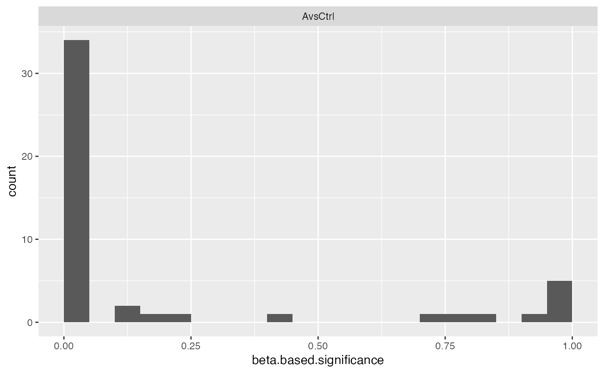
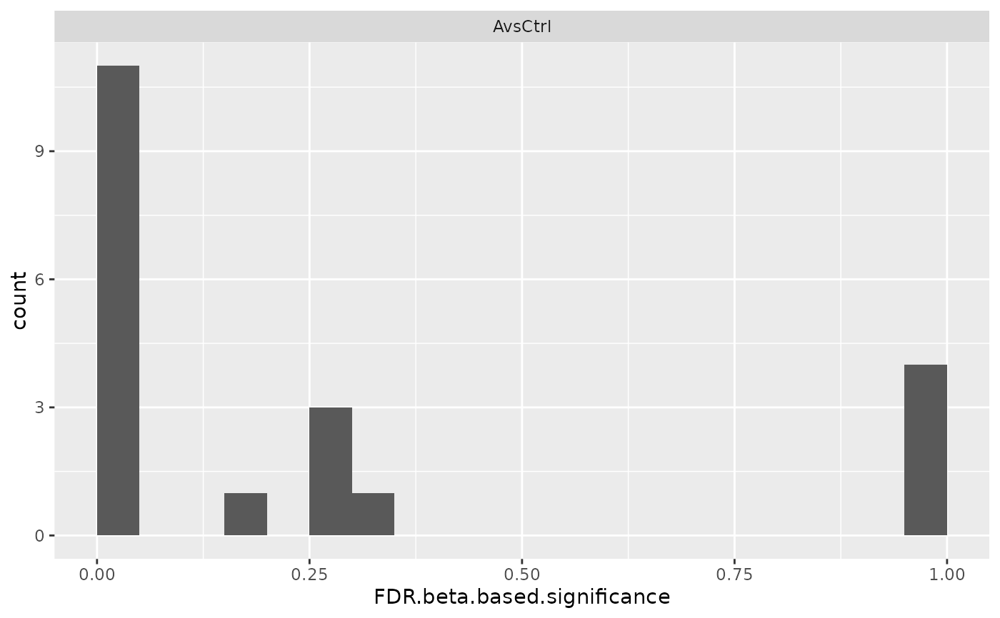
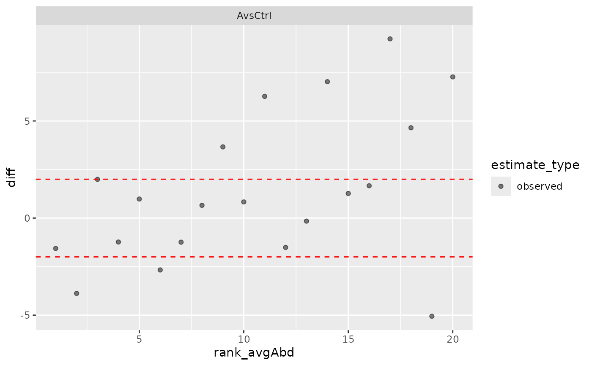

ROPECA reproducibility-optimization method
ROPECA reproducibility-optimization method
Details
ROPECA optimizes the reproducibility of statistical testing on peptide-level and aggregates the peptide-level changes to determine differential protein-level expression.
See also
summary_ROPECA_median_p.scaled
Other modelling:
AnovaExtractor,
Contrasts,
ContrastsDEqMSFacade,
ContrastsDEqMSVoomFacade,
ContrastsFirth,
ContrastsFirthFacade,
ContrastsLMFacade,
ContrastsLMImputeFacade,
ContrastsLMMissingFacade,
ContrastsLimma,
ContrastsLimmaFacade,
ContrastsLimmaImputeFacade,
ContrastsLimmaVoomFacade,
ContrastsLimmaVoomImputeFacade,
ContrastsLimpaFacade,
ContrastsLmerFacade,
ContrastsMissing,
ContrastsModerated,
ContrastsModeratedDEqMS,
ContrastsPlotter,
ContrastsRLMFacade,
ContrastsROPECAFacade,
ContrastsTable,
INTERNAL_FUNCTIONS_BY_FAMILY,
LR_test(),
Model,
ModelFirth,
ModelLimma,
StrategyLM,
StrategyLimma,
StrategyLimpa,
StrategyLmer,
StrategyLogistf,
StrategyRLM,
build_contrast_analysis(),
build_model(),
build_model_glm_peptide(),
build_model_glm_protein(),
build_model_impute(),
build_model_limma(),
build_model_limma_impute(),
build_model_limma_voom(),
build_model_limma_voom_impute(),
build_model_limpa(),
build_model_logistf(),
compute_borrowed_variance(),
compute_borrowed_variance_limma(),
compute_contrast(),
compute_lmer_contrast(),
contrasts_fisher_exact(),
get_anova_df(),
get_complete_model_fit(),
get_p_values_pbeta(),
group_label(),
impute_refit_singular(),
is_singular_lm(),
linfct_all_possible_contrasts(),
linfct_factors_contrasts(),
linfct_from_model(),
linfct_matrix_contrasts(),
merge_contrasts_results(),
model_analyse(),
model_summary(),
moderated_p_deqms(),
moderated_p_deqms_long(),
moderated_p_limma(),
moderated_p_limma_long(),
new_lm_imputed(),
pivot_model_contrasts_to_wide(),
plot_lmer_peptide_predictions(),
sim_build_models_lm(),
sim_build_models_lmer(),
sim_build_models_logistf(),
sim_make_model_lm(),
sim_make_model_lmer(),
strategy_limma(),
strategy_limpa(),
strategy_logistf(),
summary_ROPECA_median_p.scaled()
Super class
prolfqua::ContrastsInterface -> ContrastsROPECA
Public fields
ContrastContrast
contrast_resultcontrast result
model_namemodel name
subject_idcolumns with protein ID's
p.adjustmethod to use for p.value adjustment
Methods
Method new()
initialize
Usage
ContrastsROPECA$new(
Contrast,
model_name = "ROPECA",
p.adjust = prolfqua::adjust_p_values
)Method get_contrasts()
get contrasts
Method to_wide()
convert to wide format
Usage
ContrastsROPECA$to_wide(
columns = c("beta.based.significance", "FDR.beta.based.significance")
)Examples
istar <- prolfqua::sim_lfq_data_peptide_config(Nprot=20)
#> creating sampleName from file_name column
#> completing cases
#> completing cases done
#> setup done
istar_data <- istar$data
modelFunction <-
strategy_lm("abundance ~ group_")
pepIntensity <- istar_data
config <- istar$config$clone(deep = TRUE)
config$hierarchy_depth <- 2
config$hierarchy_keys_depth()
#> [1] "protein_Id" "peptide_Id"
mod <- build_model(
pepIntensity,
modelFunction,
subject_id = config$hierarchy_keys_depth())
Contr <- c("AvsCtrl" = "group_A - group_Ctrl")
contr <- prolfqua::Contrasts$new(mod, Contr)
dim(contr$get_contrasts())
#> determine linear functions:
#> get_contrasts -> contrasts_linfct
#> contrasts_linfct
#> Joining with `by = join_by(protein_Id, peptide_Id, contrast)`
#> [1] 78 14
contrM <- prolfqua::ContrastsModerated$new(contr)
dim(contrM$get_contrasts())
#> [1] 78 14
contrast <- prolfqua::ContrastsROPECA$new(contrM)
contrast$get_contrasts()
#> # A tibble: 20 × 9
#> # Groups: contrast [1]
#> modelName protein_Id contrast n diff statistic avgAbd
#> <chr> <chr> <chr> <int> <dbl> <dbl> <dbl>
#> 1 ROPECA 0EfVhX~5954 AvsCtrl 1 9.23 14.1 25.1
#> 2 ROPECA 0m5WN4~1448 AvsCtrl 2 -1.24 -1.70 18.5
#> 3 ROPECA 7cbcrd~8305 AvsCtrl 1 4.65 6.59 25.7
#> 4 ROPECA 9VUkAq~4562 AvsCtrl 16 0.980 1.41 18.1
#> 5 ROPECA At886V~3296 AvsCtrl 5 -2.67 -4.09 18.1
#> 6 ROPECA BEJI92~9143 AvsCtrl 4 1.66 2.54 24.6
#> 7 ROPECA CGzoYe~2857 AvsCtrl 1 -1.23 -1.46 17.6
#> 8 ROPECA CtOJ9t~2837 AvsCtrl 5 7.02 10.7 23.4
#> 9 ROPECA DoWup2~2934 AvsCtrl 7 0.831 1.27 21.2
#> 10 ROPECA DuwH7n~3402 AvsCtrl 3 0.655 1.00 19.6
#> 11 ROPECA Fl4JiV~7526 AvsCtrl 1 1.27 1.94 23.4
#> 12 ROPECA HC8K98~4958 AvsCtrl 2 -1.56 -1.41 15.3
#> 13 ROPECA HvIpHG~4015 AvsCtrl 2 1.99 2.78 16.4
#> 14 ROPECA I1Jk2Z~0821 AvsCtrl 10 -3.88 -4.22 15.5
#> 15 ROPECA JV3Z7t~2956 AvsCtrl 1 -5.06 -7.74 27.3
#> 16 ROPECA JcKVfU~0815 AvsCtrl 1 -1.51 -2.31 22.2
#> 17 ROPECA JfvT8X~2727 AvsCtrl 11 3.67 5.19 21.1
#> 18 ROPECA R2i6w7~0288 AvsCtrl 2 6.27 9.04 22.1
#> 19 ROPECA SGIVBl~9558 AvsCtrl 2 7.27 11.1 31.2
#> 20 ROPECA r2J0Eh~2687 AvsCtrl 1 -0.157 -0.240 22.3
#> # ℹ 2 more variables: beta.based.significance <dbl>,
#> # FDR.beta.based.significance <dbl>
contrast <- prolfqua::ContrastsROPECA$new(contr)
tmp <- contrast$get_contrasts()
dim(tmp)
#> [1] 20 9
pl <- contrast$get_Plotter()
contrast$to_wide()
#> # A tibble: 20 × 4
#> protein_Id diff.AvsCtrl beta.based.significance.Avs…¹ FDR.beta.based.signi…²
#> <chr> <dbl> <dbl> <dbl>
#> 1 0EfVhX~5954 9.23 6.43 e- 7 2.57 e- 6
#> 2 0m5WN4~1448 -1.24 9.64 e- 1 1.000e+ 0
#> 3 7cbcrd~8305 4.65 1.15 e- 3 2.55 e- 3
#> 4 9VUkAq~4562 0.980 1.01 e- 1 1.68 e- 1
#> 5 At886V~3296 -2.67 1.11 e- 6 3.70 e- 6
#> 6 BEJI92~9143 1.66 1.77 e- 3 3.54 e- 3
#> 7 CGzoYe~2857 -1.23 2.05 e- 1 2.92 e- 1
#> 8 CtOJ9t~2837 7.02 3.30 e-16 6.61 e-15
#> 9 DoWup2~2934 0.831 1.75 e- 1 2.69 e- 1
#> 10 DuwH7n~3402 0.655 2.25 e- 1 3.00 e- 1
#> 11 Fl4JiV~7526 1.27 2.50 e- 1 3.12 e- 1
#> 12 HC8K98~4958 -1.56 1.000e+ 0 1.000e+ 0
#> 13 HvIpHG~4015 1.99 8.99 e- 1 9.99 e- 1
#> 14 I1Jk2Z~0821 -3.88 2.32 e- 8 1.16 e- 7
#> 15 JV3Z7t~2956 -5.06 1.18 e- 4 2.96 e- 4
#> 16 JcKVfU~0815 -1.51 2.69 e- 2 4.90 e- 2
#> 17 JfvT8X~2727 3.67 8.43 e-16 8.43 e-15
#> 18 R2i6w7~0288 6.27 2.10 e- 5 6.01 e- 5
#> 19 SGIVBl~9558 7.27 4.51 e- 9 3.01 e- 8
#> 20 r2J0Eh~2687 -0.157 8.48 e- 1 9.98 e- 1
#> # ℹ abbreviated names: ¹beta.based.significance.AvsCtrl,
#> # ²FDR.beta.based.significance.AvsCtrl
contrast$get_linfct()
#> (Intercept) group_B group_Ctrl
#> AvsCtrl 0 0 -1.0
#> avg_AvsCtrl 1 0 0.5
contrast$get_contrast_sides()
#> # A tibble: 1 × 3
#> contrast group_1 group_2
#> <chr> <chr> <chr>
#> 1 AvsCtrl group_A group_Ctrl
pl$histogram()
#> $beta.based.significance

#>
#> $FDR.beta.based.significance

#>
pl$ma_plot()
